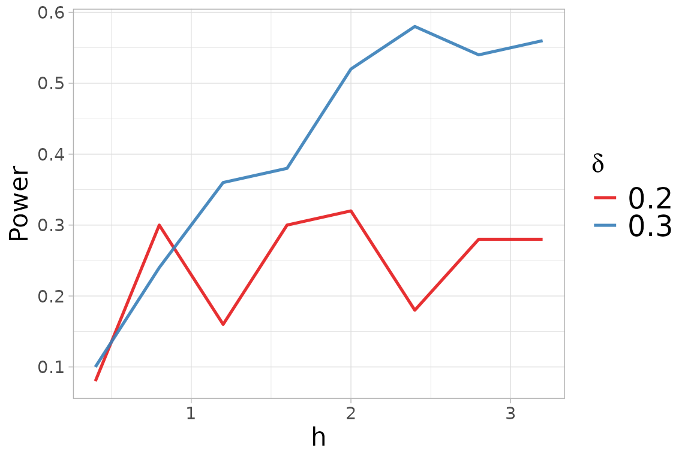

Non-parametric two-sample test
Let and be random samples from the distributions and , respectively. We test the null hypothesis that the two samples are generated from the same unknown distribution , that is:
versus the alternative hypothesis that the two distributions are different, that is
We compute the kernel-based quadratic distance (KBQD) tests
and where denotes the Normal kernel defined as
for every
, with covariance matrix
and tuning parameter
,
centered with respect to
.
For more information about the centering of the kernel, see the
documentation of the kb.test() function.
help(kb.test) The KBQD tests exhibit high power against asymmetric alternatives that are close to the null hypothesis and with small sample size. We consider an example of this scenario. We generate the samples from a standard normal distribution and from a skew-normal distribution , where , and .
library(sn)
library(mvtnorm)
library(QuadratiK)
n <- 100
d <- 4
skewness_y <- 0.5
set.seed(2468)
x_2 <- rmvnorm(n, mean = rep(0,d))
y_2 <- rmsn(n=n, xi=0, Omega = diag(d), alpha=rep(skewness_y,d))The two-sample test can be performed by providing the two samples to
be compared as x and y to the
kb.test() function. If a value of
is not provided, the function automatically performs the function
select_h.
##
## Kernel-based quadratic distance two-sample test
## U-statistic Dn Trace
## ------------------------------------------------
## Test Statistic: 1.679763 2.312427
## Critical Value: 1.087455 1.497868
## H0 is rejected: TRUE TRUE
## CV method: subsampling
## Selected tuning parameter h: 1.6We can display the chosen optimal value of
together with the power plot obtained versus the considered
,
for the alternatives
in the select_h() function.
two_test@h$h_sel## [1] 1.6
two_test@h$power.plot
For more details visit the help documentation of the
select_h() function.
help(select_h) For the two-sample case, the summary function provides
the results from the test and a list tables of the standard descriptive
statistics for each variable, computed per group and overall.
Additionally, it generates the qq-plots comparing the quantiles of the
two groups for each variable.
summary_two <- summary(two_test)##
## Kernel-based quadratic distance two-sample test
## Statistic Value Critical_Value Reject_H0
## 1 Dn 1.679763 1.087455 TRUE
## 2 Trace 2.312427 1.497868 TRUE
summary_two$summary_tables## [[1]]
## Group 1 Group 2 Overall
## mean -0.005393522 0.3197861 0.1571963
## sd 1.039119207 0.9094193 0.9875137
## median -0.019317321 0.4448058 0.1601955
## IQR 1.562613453 1.3612937 1.4292426
## min -2.675477796 -1.4256211 -2.6754778
## max 2.151784802 2.9375947 2.9375947
##
## [[2]]
## Group 1 Group 2 Overall
## mean -0.10005083 0.1936138 0.04678149
## sd 1.10476260 1.0556439 1.08777010
## median -0.07955849 0.2235325 0.10130247
## IQR 1.48816630 1.4716179 1.41498342
## min -3.22222061 -2.4336333 -3.22222061
## max 2.50192633 2.6879362 2.68793623
##
## [[3]]
## Group 1 Group 2 Overall
## mean -0.006524772 0.1701261 0.08180065
## sd 0.958942739 0.9524916 0.95742170
## median -0.039301279 0.1887394 0.11877637
## IQR 1.329868172 1.4657107 1.40312077
## min -2.860006689 -2.1762183 -2.86000669
## max 1.923763114 2.4237195 2.42371949
##
## [[4]]
## Group 1 Group 2 Overall
## mean -0.06757686 0.2236458 0.07803449
## sd 0.98684958 0.9862135 0.99481815
## median -0.03258747 0.1097711 0.05517931
## IQR 1.30933016 1.4088334 1.39890664
## min -2.29625537 -2.1827156 -2.29625537
## max 2.40795077 2.9929942 2.99299420Select h
The search for the optimal value of the tuning parameter
can be performed independently from the test computation using the
select_h function. It requires the two samples, provided as
x and y, and the considered family of
alternatives.
The code is not evaluated since we would obtain the same results.
Note
Notice that the test statistics for two-sample testing coincide with
the
-sample
test statistics when
.
Hence, alternatively the two sample tests can be performed providing the
two samples together as x and indicating the membership to
the groups with the argument y.
x_pool <- rbind(x_2,y_2)
y_memb <- rep(c(1,2),each=n)
h <- two_test@h$h_sel
set.seed(2468)
kb.test(x=x_pool, y=y_memb, h=h)##
## Kernel-based quadratic distance k-sample test
## U-statistic Dn Trace
## ------------------------------------------------
## Test Statistic: 1.679763 2.312427
## Critical Value: 1.087455 1.497868
## H0 is rejected: TRUE TRUE
## CV method: subsampling
## Selected tuning parameter h: 1.6See the k-sample test vignette for more details.
In the kb.test() function, the critical value can be
computed with the subsampling, bootstrap or permutation algorithm. The
default method is set to subsampling since it needs less computational
time. For details on the sampling algorithm see the documentation of the
kb.test() function.
For more details on the level and power performance of the considered two-sample tests, see the extensive simulation study reported in the following reference.
References
Markatou Marianthi & Saraceno Giovanni (2024). “A Unified
Framework for Multivariate Two- and k-Sample Kernel-based Quadratic
Distance Goodness-of-Fit Tests.”
https://doi.org/10.48550/arXiv.2407.16374